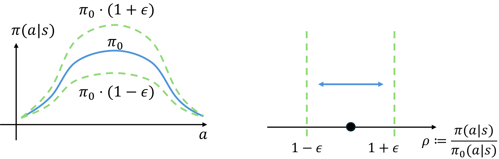
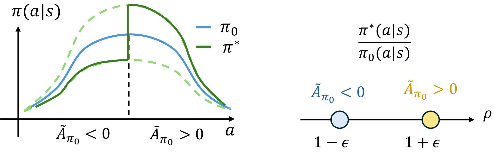
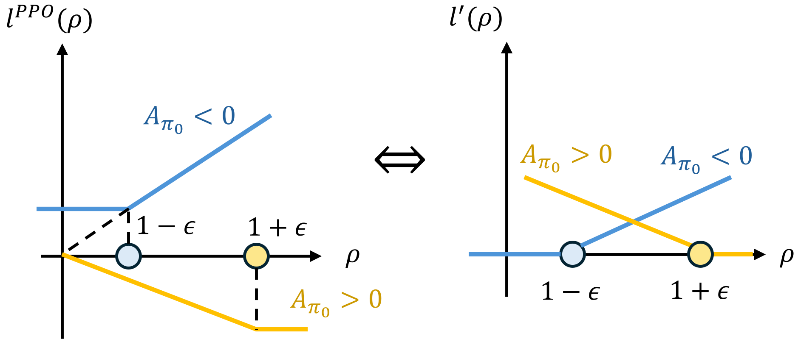
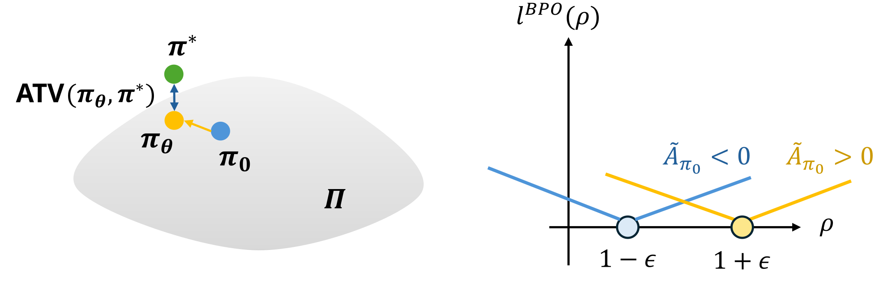
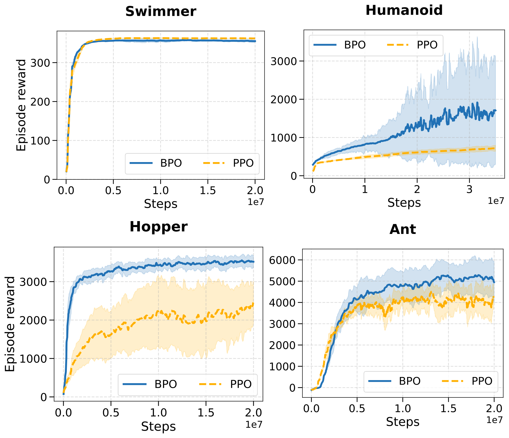
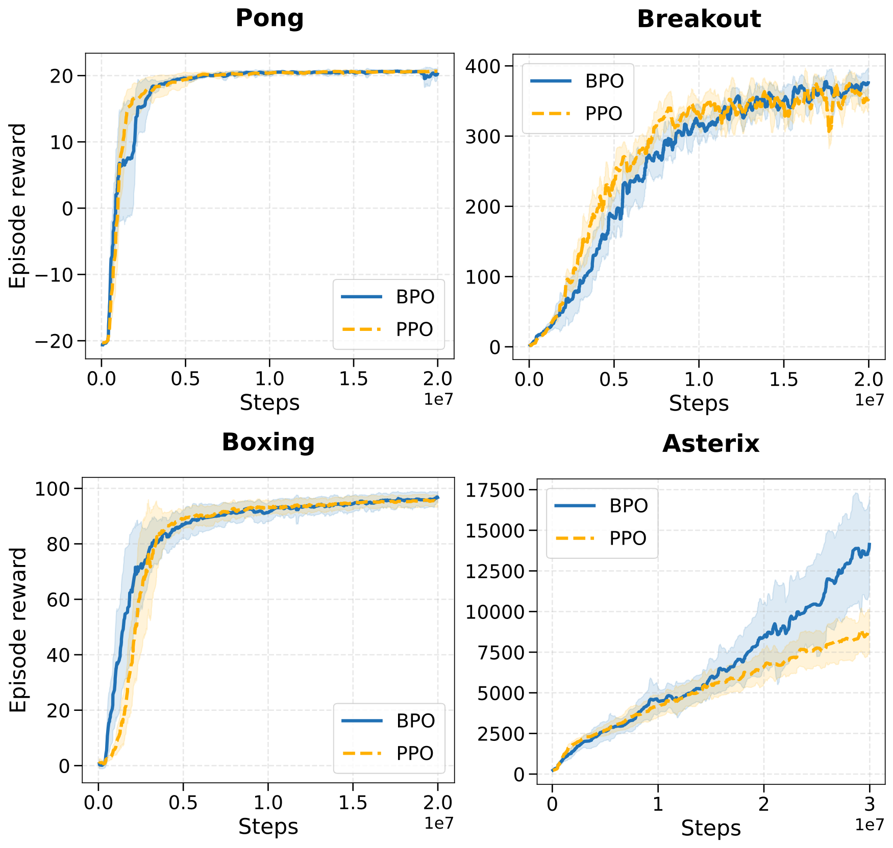
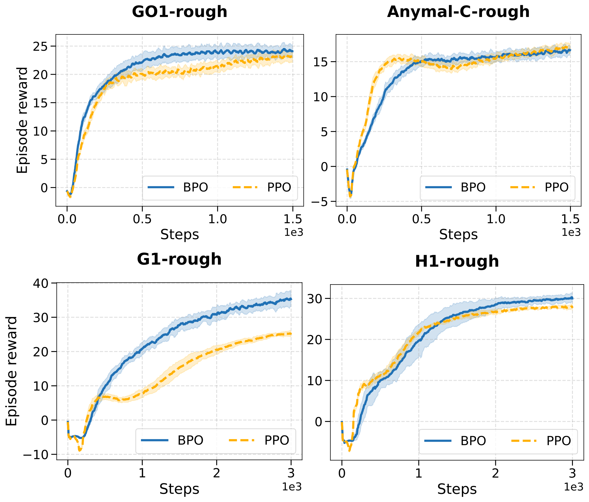

Bounded Ratio Reinforcement Learning
Abstract
-
We present Bounded Ratio RL (BRRL), a framework that bridges the gap between the theoretical foundation and practice of deep RL.
We formulate a novel regularized policy optimization problem with bounded ratio constraints, and derive its analytical solution.
We prove that this solution guarantees strict monotonic performance improvement.
We then develop a simple algorithm, Bounded Policy Optimization (BPO), that minimizes a divergence between the current policy and the analytical solution, and extend it to the settings of LLM fine-tuning as Group-relative BPO (GBPO).
We establish a lower bound on the expected performance of the resulting policy in terms of our loss function.
We interpret the success of PPO from a new perspective, and connect BRRL to Cross-Entropy Method (CEM).
We conduct extensive experiments on MuJoCo, Atari, IsaacLab and LLM fine-tuning tasks, and demonstrate that BPO and GBPO generally match or outperform PPO and GRPO in stability and final performance.
Method Overview
Bounded Ratio RL Framework
We consider a policy optimization problem with bounded ratio trust region constraints from an old policy $\pi_0$
where $A_{\pi_0}(s, a)$ is the advantage function of the old policy $\pi_0$, $d_{\pi_0}$ is the state visitation distribution under the old policy, $1\pm\epsilon$ represents the ratio boundaries, as illustrated in Figure 1.

Notably, this problem has an analytical optimal solution $\pi^*$, which in many cases can be derived as
where $Q_{\pi_0}(s,a)$ is the action-value function of the old policy $\pi_0$, $\mu_{\pi_0}(s)$ is the median of $Q_{\pi_0}(s,a)$ under the old policy, and $\tilde{A}_{\pi_0}(s,a)$ is a median-advantage function.
This optimal solution (Figure 2) is straightforward and can be explained as: if $Q_{\pi_0}(s,a)$ is higher than the threshold $\mu_{\pi_0}(s)$, then take the highest probability within the constraint $\pi^*(a|s)=(1+\epsilon)\pi_0(a|s)$; otherwise, let $\pi^*(a|s)=(1-\epsilon)\pi_0(a|s)$.

The aforementioned optimal policy $\pi^*$ can be shown to have improved expected total reward over $\pi_0$ (detailed in Theorem 4.2 of the paper)
where $d_0$ is the initial state distribution, $V_{\pi^*}$ is the value function of the optimal policy, and the second term $\epsilon B$ is non-negative and is positive whenever $\pi_0$ induces non-zero median advantage.
Note that optimal solution $\pi^*$ and the performance improvement above can also be extended to problems with asymmetric bounded ratio constraints ($c_l\leq \pi(a|s)/\pi_0(a|s) \leq c_h$). This asymmetric solution is used to draw a connection to the cross-entropy method (CEM) (detailed in the Section 4.6 of the paper).
Revisit PPO loss function
We observe that the PPO loss function
approximately drives the policy towards our $\pi^*$. Specifically, as shown in Figure 3, minimizing the PPO loss is equivalent to minimizing the expectation of the following loss function evaluated at $\rho = \pi(a|s)/\pi_0(a|s)$
Intuitively, this equivalence follows from the fact that adding or subtracting a constant from the objective function does not change the optimal solution.
At the beginning of the iteration, the ratio always starts from 1, and the PPO loss minimizes an advantage-weighted absolute error between the ratio $\rho$ and the target $1 + \epsilon\cdot\text{sign}(A_{\pi_0})$, then it applies zero-gradient after reaching the target.

Since $\pi^*$ has monotonic performance improvement, the momentum that PPO drives the policy towards $\pi^*$ justifies its effectiveness from a new perspective.
Bounded policy optimization (BPO)
We introduce a natural PPO variant with the loss function $l^{BPO}$ to directly minimize the advantage weighted total variation (ATV) from the optimal solution $\pi^*$, as shown in Figure 4. The resulting loss $l^{BPO}$ evaluated under $\rho = \pi(a|s)/\pi_0(a|s)$ is
The loss is illustrated in Figure 4. It minimize the divergence between the admissible policy $\pi \in \Pi$ and $\pi^*$, where $\pi^*$ may not be admissible $\pi^*\notin \Pi$.

Compare with the equivalent PPO loss $l'$, this loss function $l^{BPO}$ only differs in two ways: (1) a symmetric slope also for $|\rho - 1| \geq \epsilon$ and (2) using $\tilde{A}_{\pi_0}$ instead of $A_{\pi_0}$.
Notably, with this refined loss function, BPO has both theoretical performance guarantees. Specifically, we can express the stepwise improvement in terms of the achieved loss
where $B$ is defined in (1). Here, $\delta(\pi,\pi^*)$ is an error term that is related to $l^{BPO}(\frac{\pi(a|s)}{\pi_0(a|s)})$ and reduces to $0$ if we have perfect policy approximation $\pi=\pi^*$. This theoretical result directly implies that, if our loss function $l^{BPO}$ is sufficiently minimized over states and actions sampled from $\pi_0$, and if the policy approximation error is small, we can obtain monotonic performance improvement.
Benchmarking Results
MuJoCo
In MuJoCo tasks, BPO achieves clear performance gains in the Ant-v4, Hopper-v4, and Humanoid-v4 environments.

Atari
In Atari benchmarks, BPO generally matches PPO’s performance, notably outperforming it in the Asterix environment.

NVIDIA IsaacLab
BPO is highly effective in complex robotic locomotion tasks. In particular, on G1-rough, BPO significantly outperforms the baseline to reach a higher performance ceiling. For the Go1-rough and H1-rough environment, BPO also slightly exceeds the final performance of PPO. Notably, across all four benchmarks, BPO exhibits enhanced training stability and smoother dynamics compared to the PPO baseline.

TTRL
We conduct experiments in the Test-Time Reinforcement Learning (TTRL) framework, fine-tuning the Qwen2.5-Math-1.5B model with GBPO and GRPO on the AIME-TTT and AMC-TTT benchmarks, and then compare their reasoning performance. The empirical results, illustrated in Figure~8, reveal that GBPO can maintain performance gains as the number of training epochs and clip ratio increase. Conversely, GRPO exhibits instability under these conditions. These findings highlight GBPO’s potential as a more robust and stable alternative for the fine-tuning of large-scale models.